At the United Nations' event celebrating the International Day of Happiness on March 20, 2012, the first World Happiness Report was released. TED talks, conferences, fields of study, and decades of research are dedicated to the question "What makes us happy?" The report aimed to answer that question through "happiness indicators". The researchers behind the report used data from the Gallup World Poll and answers to the Cantril ladder question (https://news.gallup.com/poll/122453/understanding-gallup-uses-cantril-scale.aspx), which are measurements of a respondent's imagined best (10) to worst (0) possible lives and where their lives fall on that scale. This score is broken into six factors: "economic production, social support, life expectancy, freedom, absence of corruption, and generosity".
library(tidyverse)
library(readr)
library(dtplyr)
library(data.table)
library(corrplot)year1 <- fread("2018.csv")
year2 <- fread("2019.csv")I obtained the data from https://www.kaggle.com/unsdsn/world-happiness. I imported the data using fread() and used summary() to search for any missing values. The only missing value was in year1's Perceptions of corruption. I replaced that NA with year2's value, which is acceptable because a change (delta) of zero from year to year will not affect my question. However, it will allow me to use the other values for that location/row. Strangely, the same problem column was a different datatype in both years (char and dbl), so I cast them as doubles. After, I was able to merge the datasets and order them by Overall rank.
#Add years and merge
year1 <- year1 %>%
mutate(year = 2018)
year2 <- year2 %>%
mutate(year = 2019)
#account for NA values
summary(year1)
summary(year2)
year1$"Perceptions of corruption"[20] <- year2$`Perceptions of corruption`[21]
#originally for years1 and 2, one variable is sux
options(digits=5)
year1$`Perceptions of corruption` <- as.double(year1$`Perceptions of corruption`)
years <- merge(year1, year2, all.x = TRUE, all.y = TRUE)
years2 <- lazy_dt(years)I examined the dimensions and base R summary statisics of the years dataset. Notably with a score of 7.632 in 2018, Finland has the number one spot for both years, and their perceived healthy life expectancy went up by ~.1 while their perceived freedom went down by ~.1. Also, Norway and Denmark swapped positions for 2nd and 3rd rank. On the opposite end of the spectrum, Burundi and South Sudan have the lowest happiness score at 2.905 and 2.853 respectively. The lowest six countries report subscores all below 1 point, and the Central African Republic has scores of 0 for social support for both years. One of the few other 0's was Afghanistan for freedom to make life choices.
dim(years)
head(years)
tail(years)
names(years)
str(years)
summary(years)
summary(year1$Score)
summary(year2$Score)The corrplot correlation matrix revealed the relationships between the subscores. Seeing these relationships are important for other questions and seeing the "status quo" of happiness indicators. That said, GDP per capita and Healthy Life expectancy were most highly correlated. I also looked at the shifting distributions of the subscores through histograms. Visually, the main changes were an increase in perceived corruption for the first quartile of countries (which means a lower score) and an increase in all countries' perceptions of Healthy life Expectancy. This is also reflected in their summary statistics. In boxplots, GDP seemed to increase, but only because the scale shifted. This was due to the absence of an outlier that was present in year1 but not year2- the United Arab Emirates' GDP score dropped from 2.096 to 1.684. This might indicate a change in how much happiness GDP per capita gives the citizens. Finally, the freedom subscore decreases and the perception of corruption score has the most outliers due to a majority of low values.
#Correlation Matrix
corrplot(cor(year2[,3:9]), method = "pie")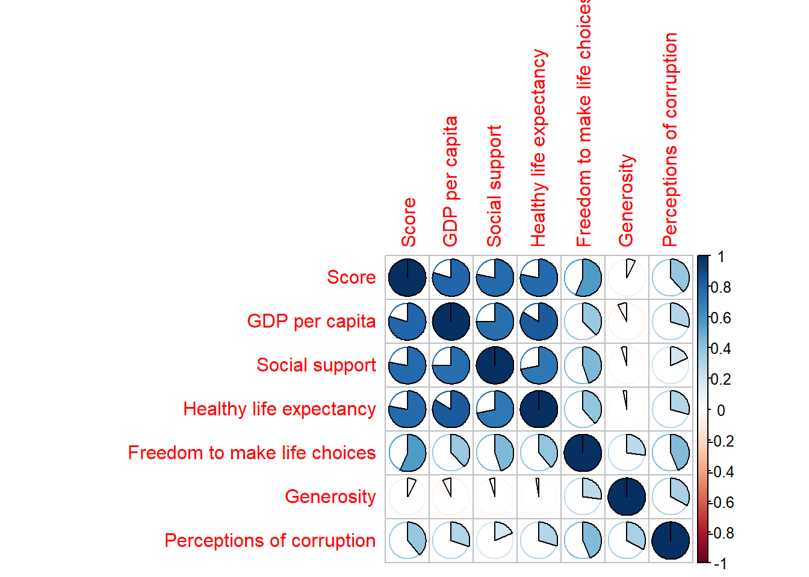
par(mfrow = c(1,2))
#Histograms year1 vs year2
hist(year1$Score)
hist(year2$Score)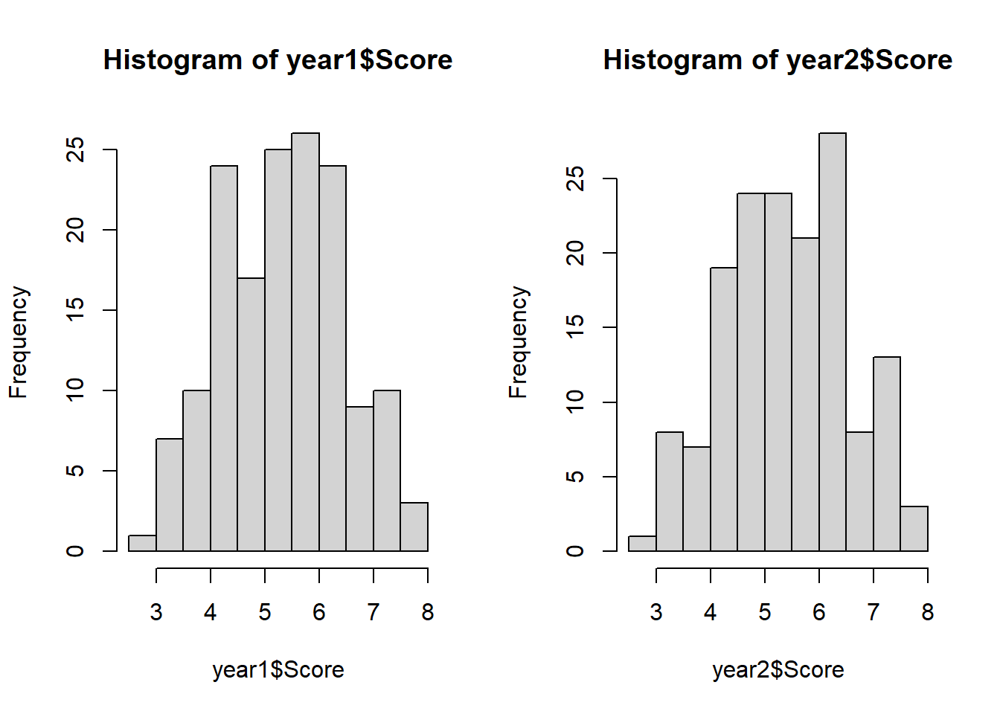
hist(year1$`Healthy life expectancy`)
hist(year2$`Healthy life expectancy`)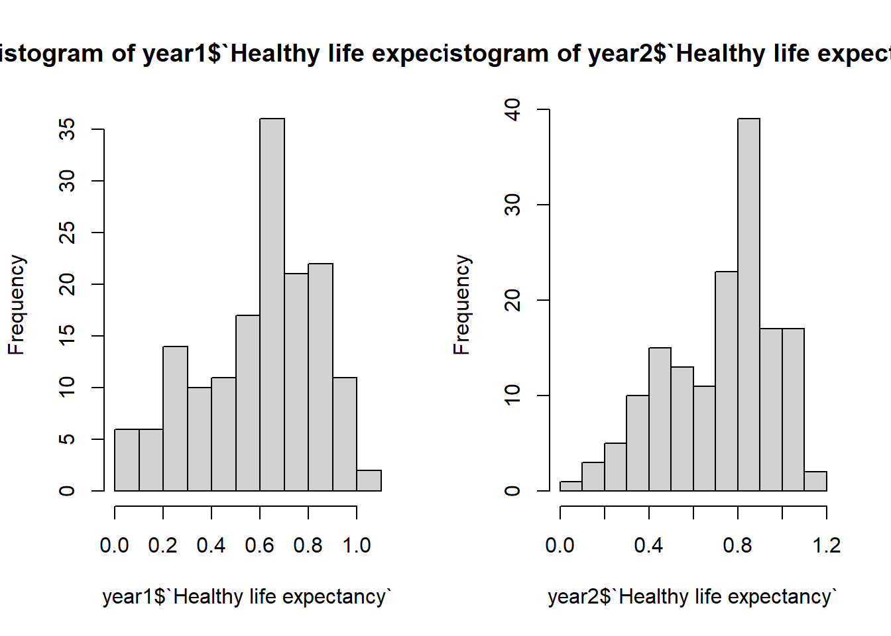
hist(year1$`Perceptions of corruption`)
hist(year2$`Perceptions of corruption`)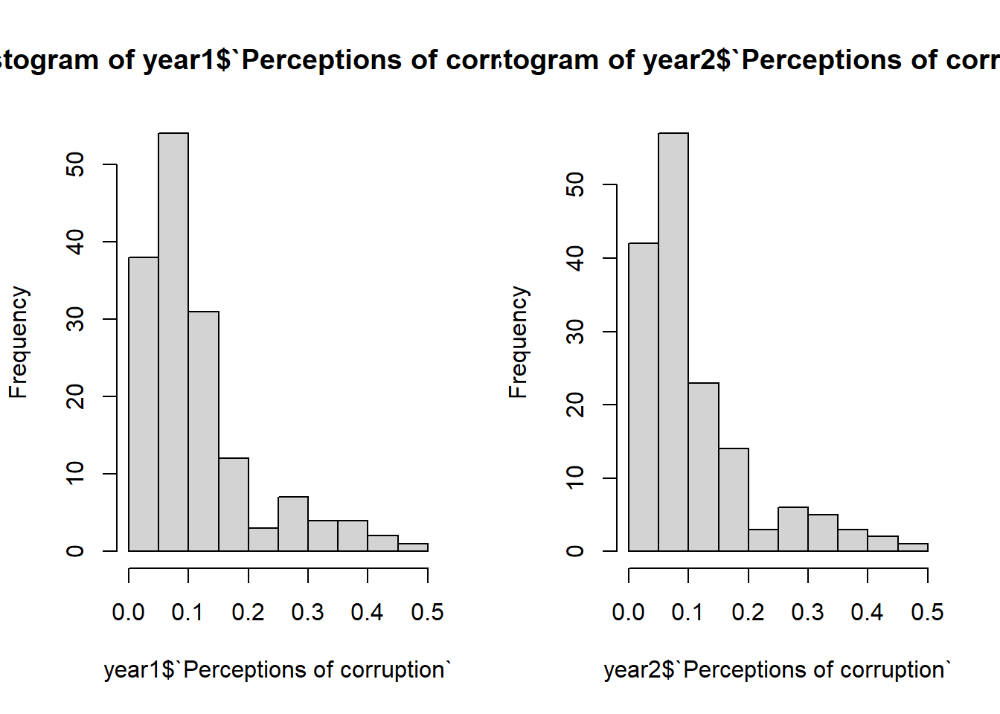
par(mfrow = c(1,2))
#Boxplot outliers
boxplot(year1$'GDP per capita')
boxplot(year2$'GDP per capita')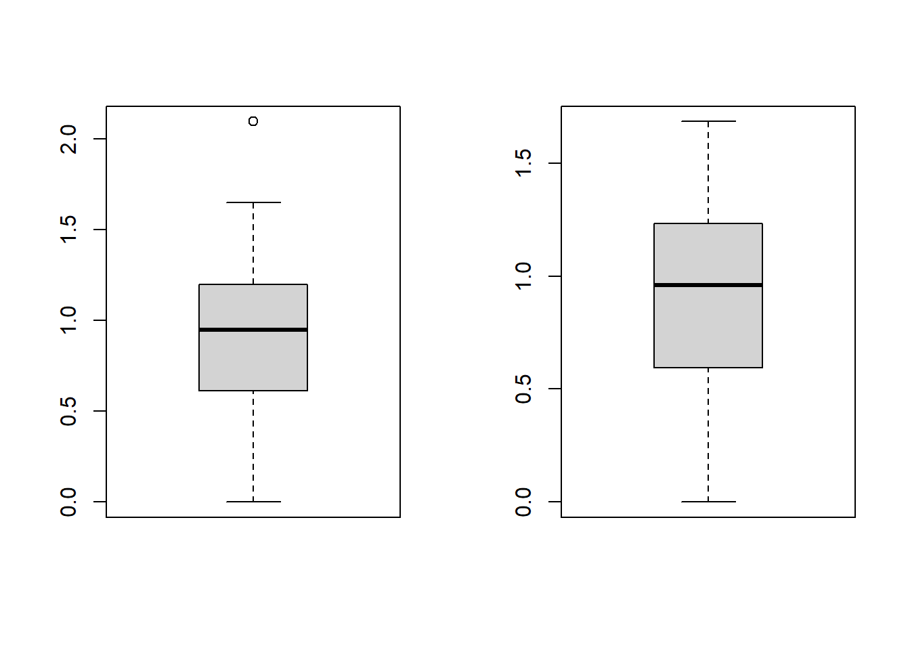
boxplot(year1$`Freedom to make life choices`)
boxplot(year2$`Freedom to make life choices`)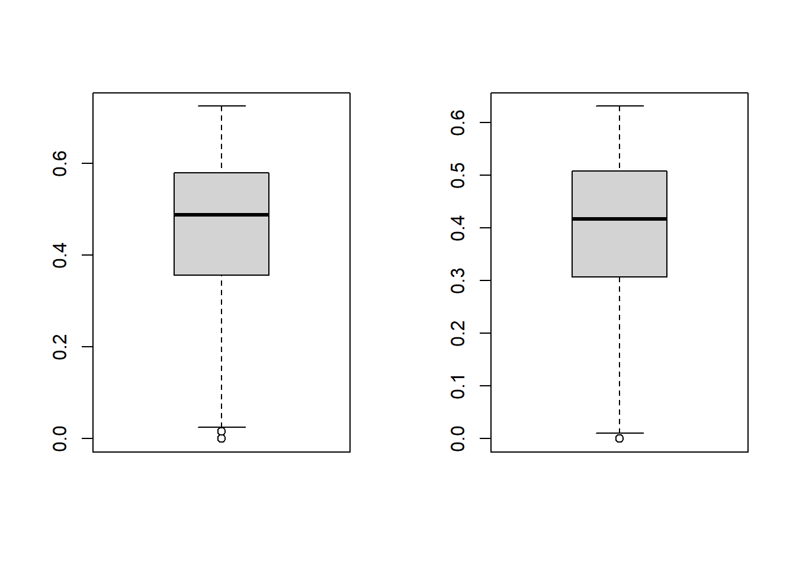
boxplot(year1$`Perceptions of corruption`)
boxplot(year2$`Perceptions of corruption`)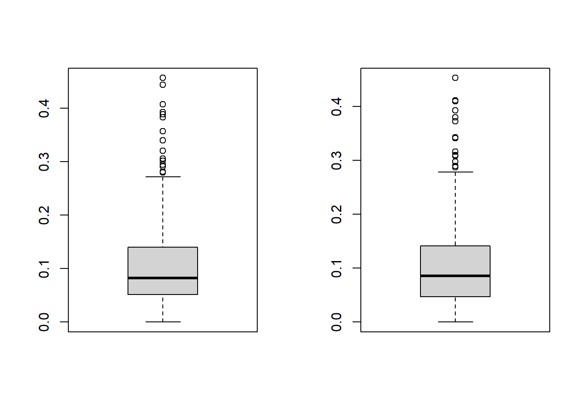
# Initial Plot, converted to combined plot below
# years %>%
# filter(!(year %in% NA)) %>%
# ggplot() +
# geom_point(mapping = aes(x = `Healthy life expectancy`, y = `Score`, color=year)) +
# facet_wrap(~ year, nrow = 1)
#
# ggplot(data=year1) +
# geom_point(mapping=aes(x=year1$Generosity, y=year1$'Score', color=cut(year1$'Score', b = 5)))+
# scale_color_manual(values = viridis::viridis(5)) +
# geom_smooth(aes(x=year1$Generosity, y=year1$'Score'), method = "lm")Based on the combined scatter/line plots and factorized years, the most significant changes between years occur from increases in Healthy life expectancy and decreases in Freedom to make choices. These increases can be seen through left and right translations on the x-axis. It's likely these changes aren't as visible on the 'Score' y-axis because the changes (approximately ~.1 each) cancel out when they contribute to the overall score. These findings agree with and expand upon with the EDA histogram and boxplot findings. The addition of the scatter/line plot makes the trends more visible.
par(mfrow = c(7,1))
scatter_score <- function(col,title){
ggplot(data = years, mapping = aes(x = col, y = `Score`, linetype=factor(year), color = factor(year))) +
geom_point() +
geom_smooth(se = FALSE) +
ggtitle(title)
}
scatter_score(years$`GDP per capita`, "years$`GDP per capita`")## `geom_smooth()` using method = 'loess' and formula 'y ~ x'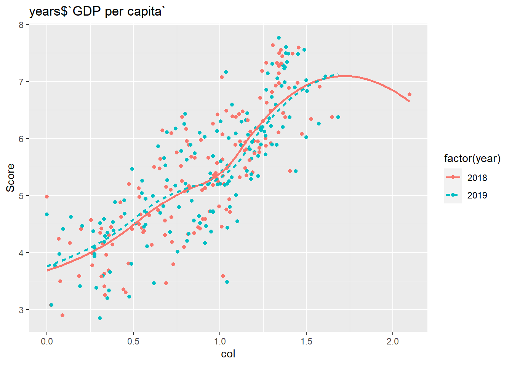
scatter_score(years$`Social support`, "years$`Social support`")## `geom_smooth()` using method = 'loess' and formula 'y ~ x'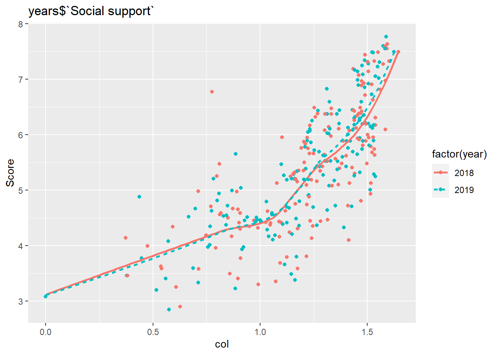
scatter_score(years$`Healthy life expectancy`, "years$`Healthy life expectancy`")## `geom_smooth()` using method = 'loess' and formula 'y ~ x'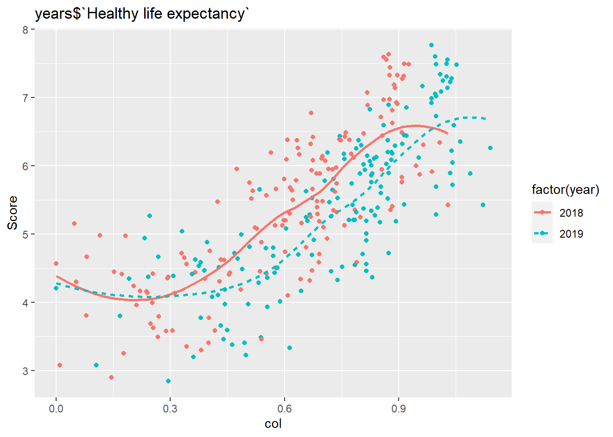
scatter_score(years$`Freedom to make life choices`, "years$`Freedom to make life choices`")## `geom_smooth()` using method = 'loess' and formula 'y ~ x'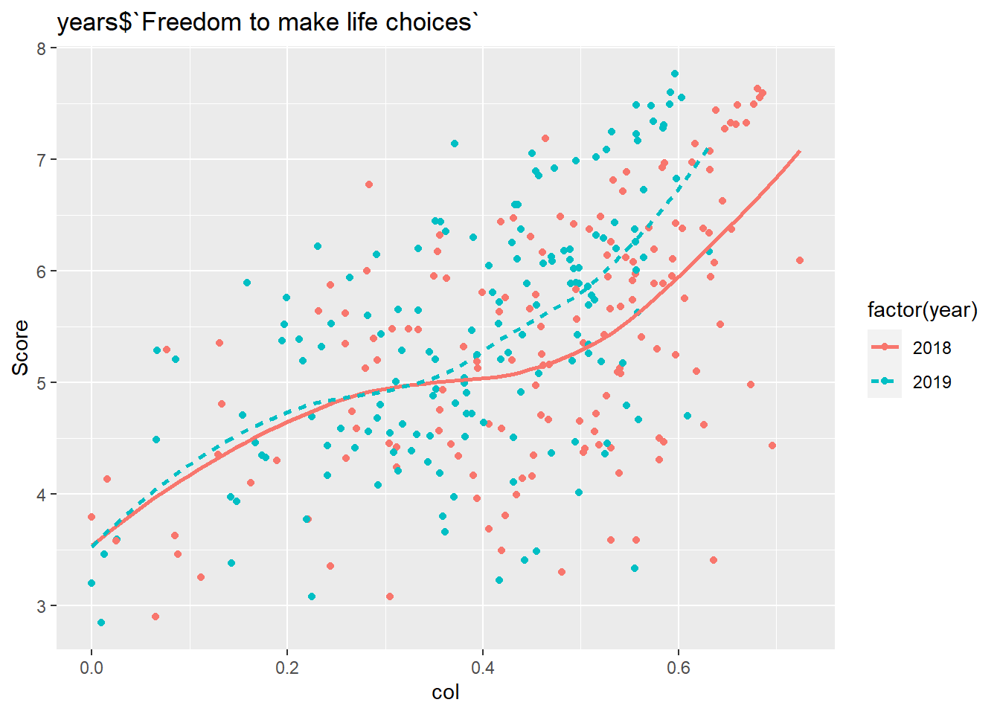
scatter_score(years$Generosity, "years$Generosity")## `geom_smooth()` using method = 'loess' and formula 'y ~ x'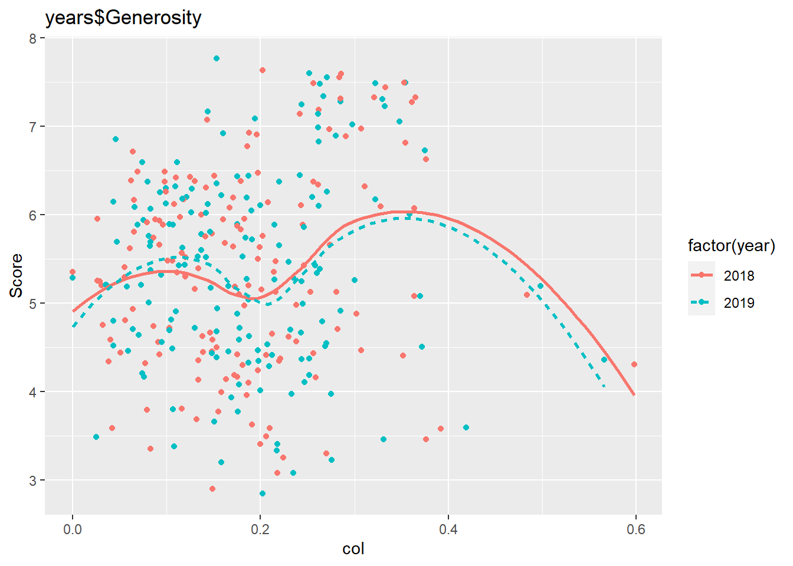
scatter_score(years$`Perceptions of corruption`, "years$`Perceptions of corruption`")## `geom_smooth()` using method = 'loess' and formula 'y ~ x'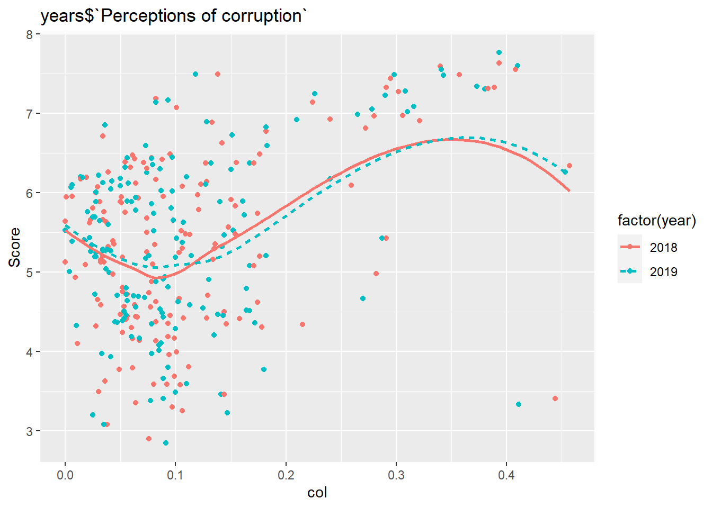
Annoying Problems: -year1 %>% ggplot does not work unless variables use ` instead of ' or "
Of course, many complex factors contribute to national and individual happiness levels. They range from political and economic stability to social status and more. The Happiness Report provide provides a key benchmark for our understanding of happiness around the world.
Over 2018 to 2019, there was not much change in happiness levels or their subscores. Most change was on the order of magnitude of 10^-1 for subscores. As stated before, the key changes were increase in Healthy life expectancy and decreases in Freedom scores. These findings and any other changes in happiness level, beg the question of why. What social, local, or global effects cause happiness levels to change or stay the same? Regardless of the answer, I hope this research and analysis gives the reader a sense of comfort that at least someone, somewhere is asking the questions necessary to build a happier world.